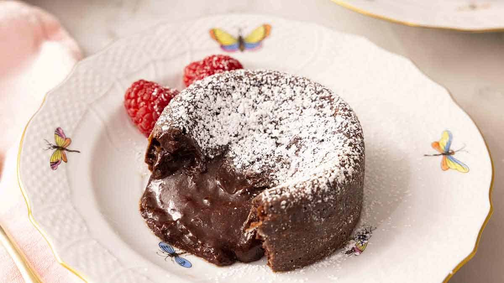

Lava Cake

Description
The sweet comfort of chocolate gets enhanced with a touch of warmth through this fabulous recipe
of a fluffy chocolate cake as its outter shell. This is the delicious chocloate lava cake!
This recipe is family freindly and brings joy to all who have tried it. It follows simple steps with simple ingredients, love being the biggest one!
Have fun and be creative when making this recipe, as that is what matters most!
Ingredients
- 1/2 cup butter
- 6 ounces bittersweet chocolate
- 2 large eggs
- 2 large egg yolks
- 1/4 cup sugar
- 1/8 teaspoon salt
- 2 tablespoons all-purpose flour
Steps
- Preheat the oven to 450F. Butter and lightly flour 6 (4- to 5-ounce)
ramekins and place them on a baking sheet.
- Combine the butter and chocolate in a double boiler and melt over low heat, stirring until smooth.
Or, place the butter and chocolate in a microwave-safe bowl and microwave on high, stirring every 30-seconds until melted. Whisk together until smooth.
- In a large mixing bowl, combine the eggs, egg yolks, sugar, and salt. Beat on medium speed until thick and pale yellow. Fold the chocolate mixture and flour into the egg mixture until well combined.
Divide the batter among the prepared ramekins.
- Bake for 6 to 8 minutes or until the sides of the cakes are firm set but the center is jiggly.
Let the cakes cool in the ramekins for 1 minute.
- Place a small dessert plate over the top of each ramekin and carefully turn it over, inverting the cake onto the plate. Let stand for about 10 seconds, then remove the ramekin to unmold the cakes. Sift powdered sugar on top and garnish with berries,
if desired. Serve immediately.